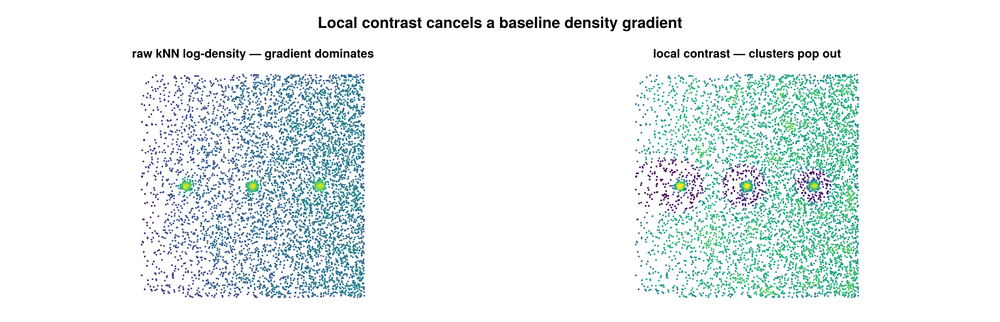

Local contrast
A cluster_statistics feature, configured by LocalContrastFeature, that computes a per-emitter local-density contrast: each point's fine-scale kNN log-density minus the median fine-scale log-density over a larger surrounding neighborhood. Positive values mark points that are denser than their local background; the result is a per-emitter feature vector the caller thresholds directly.

A baseline density gradient (sparse left → dense right) hides three clusters in the raw kNN density (left). Subtracting a local baseline cancels the gradient, so the clusters stand out (right).
Concept
A raw density estimate cannot tell a point in a compact structure apart from a point in a uniformly dense region — both report a high absolute density. Local contrast captures the elevation of a point's density above the density of its own surroundings: the same number of neighbors packed into a tight core gives a large contrast, while neighbors spread evenly over the baseline give a contrast near zero.
This matters because the absolute-density classifier (Otsu / GMM on log density) calls a point "structure" whenever its density exceeds a single global cutoff. When the baseline density varies across the field of view — cell-edge thinning, illumination falloff, a biological gradient — that one cutoff is wrong on at least one side of the cell. Subtracting a coarse local baseline cancels the gradient, so the feature fires only where a point is denser than its immediate neighborhood rather than denser than the cell-wide average. The per-emitter vector is meant to be thresholded into a foreground mask, e.g. as the seed/support gates of a point-hysteresis seed-and-grow on clouds with non-stationary baseline density.
How it works
Coordinates are taken in microns (µm) from the emitters (2D (x, y), or (x, y, z) when use_3d=true). A KDTree is built over the coordinate set (per dataset or pooled, see Configuration). Write $k_d$ for density_k and $k_b$ for background_k.
1. Fine kNN log-density. For each emitter $i$, let $r_{k}$ be the Euclidean distance to its $k_d$-th nearest neighbor (excluding the point itself). The kNN density estimate normalizes the neighbor count by the disk area $\pi r_k^2$, and the feature stores its natural log:
\[f_i = \log\!\left(\frac{k_d}{\pi\, r_{k}^{2}}\right)\]
The log keeps the downstream median and threshold comparisons on a comparable scale across a cell. If $r_k = 0$ (coincident coordinates), $f_i$ is set to NaN.
2. Local baseline. For each emitter $i$, take the median of $f_j$ over its $k_b$ nearest neighbors (excluding self, skipping any non-finite $f_j$). The median (rather than the mean) tolerates a small number of locally elevated neighbors without dragging the baseline up.
3. Contrast. The per-emitter feature is the difference
\[c_i = f_i - \operatorname{median}_{\,j \in k_b\text{-NN}(i)} f_j\]
Because it is a difference of logs, $c_i$ is the log-ratio of the point's fine density to its local baseline density: $c_i > 0$ means point $i$ is denser than its surroundings, $c_i \approx 0$ means it matches the baseline, and $c_i < 0$ means it is sparser. The value is reported in nats (natural-log scale).
Configuration
LocalContrastFeature is a Base.@kwdef struct <: AbstractStatisticsConfig:
| field | default | unit | meaning |
|---|---|---|---|
density_k | 200 | count | fine-scale neighbor count $k_d$ for the per-point log-density; sets the spatial scale of the signal |
background_k | 2000 | count | coarse-scale neighbor count $k_b$ for the local baseline; sets the spatial scale of the baseline. Must be > density_k |
use_3d | false | — | if true, build the KDTree over (x, y, z) instead of (x, y) |
per_dataset | false | — | if true, compute each dataset independently (its own KDTree); per-emitter outputs are stitched back into original emitter order either way |
Validation happens at the cluster_statistics call: background_k > density_k and density_k ≥ 1 are required, otherwise an ArgumentError is raised (the baseline must be coarser than the signal).
using SMLMClustering
using Statistics # for `quantile` in the thresholding example below
# smld :: SMLMData.BasicSMLD
(_, info) = cluster_statistics(smld, LocalContrastFeature(density_k=200, background_k=2000))
info.statistic # median of the finite per-emitter contrasts (scalar summary)
info.statistic_name # :median_local_contrast
info.algorithm # :local_contrast
contrast = info.extras[:contrast_per_emitter] # Vector{Float64}, per emitter
fine = info.extras[:log_density_per_emitter] # Vector{Float64}, the fine f_i
# Threshold the per-emitter feature directly, e.g. seed/support gates for
# hysteresis seed-and-grow on a non-stationary baseline:
fine_floor = quantile(filter(isfinite, fine), 0.35)
seed = isfinite.(contrast) .& (contrast .> 0.25) .& (fine .> fine_floor)
support = isfinite.(contrast) .& (contrast .> -0.05) .& (fine .> fine_floor)
(smld_out, _) = cluster(smld, PointHysteresisConfig(graph_k=12, min_points=150);
seed=seed, support=support)Output & interpretation
cluster_statistics returns (smld, info) where smld is the unmodified input (the statistics interface writes nothing onto the SMLD) and info is a ClusterStatisticsInfo:
info.statistic— the median of the finite contrast values pooled across all groups; a single-scalar summary of the run. It isNaNwhen no group has enough points to compute the feature.info.statistic_name—:median_local_contrast.info.algorithm—:local_contrast.info.extras[:contrast_per_emitter]—Vector{Float64}of lengthn_locs_in, the per-emitter contrast $c_i$, in original emitter order. This is the primary output the caller thresholds.info.extras[:log_density_per_emitter]—Vector{Float64}of lengthn_locs_in, the fine kNN log-density $f_i$, also in original emitter order. Useful as a complementary absolute-density gate (e.g. require $f_i$ above a quantile floor in addition to a positive contrast).
Interpretation: a high positive contrast is a point sitting in a local density peak (a candidate structure point); a contrast near zero is a point whose density matches its surroundings (uniform background, regardless of how dense that background is); a negative contrast is a point sparser than its neighborhood. Because the baseline is local, the same contrast threshold applies on both the dense and the thin side of a density gradient.
Notes & caveats
- 2D / 3D. Both are supported via
use_3d. The KDTree and neighbor distances are taken in the chosen dimensionality, but the density normalization is always the 2D disk area $\pi r_k^2$ in $f_i$ — even whenuse_3d=true. The contrast difference still behaves sensibly, but the absolutelog_density_per_emitterscale is a 2D-area form, not a true 3D (volume) density. - Too-small groups. A group with $n \le k_d$ emitters cannot be evaluated; those emitters receive
NaNfor both contrast and log-density (avoids a degenerate kNN query against a too-small set). background_k ≥ nin a group. $k_b$ is clamped to $n-1$ for that group, so the feature degrades gracefully to "log-density minus the group median," which is still well-defined.- Coincident coordinates. A point whose $k_d$-th-neighbor distance is zero ($r_k = 0$) receives
NaNlog-density andNaNcontrast. A point with no finite baseline neighbors also receivesNaNcontrast. per_dataset. Whentrue, each dataset is built and evaluated on its own KDTree (no cross-dataset neighbors); whenfalse, all emitters are pooled into one tree. Either way the per-emitter outputs are returned in original emitter order, andinfo.statisticis the median over the finite contrasts of the whole input.- NaN handling. Both extras vectors are initialized to
NaNand only filled where the feature is computable, so callers should mask withisfinite(as the example does) before thresholding or aggregating.